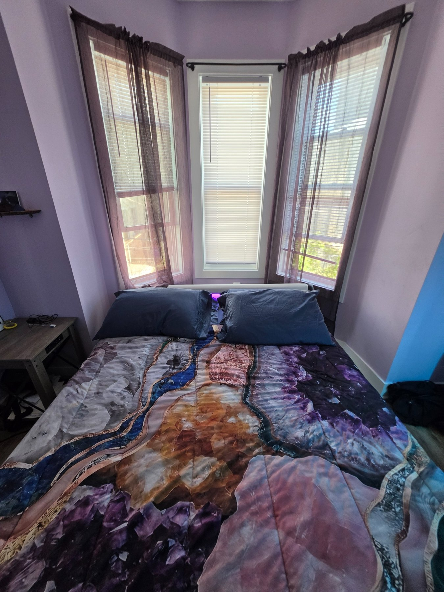
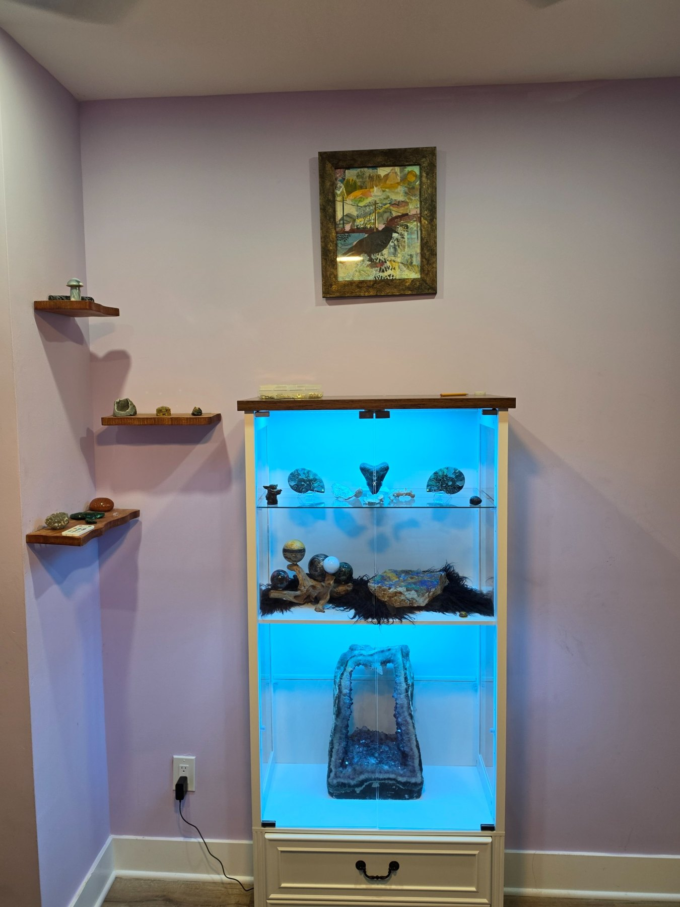
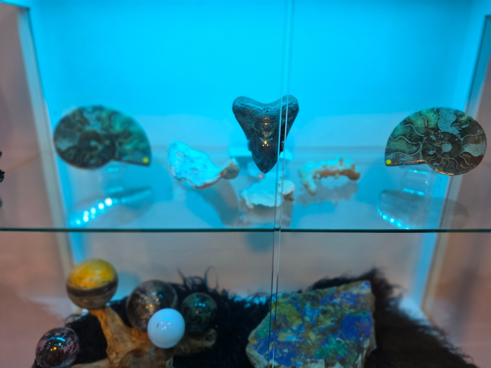
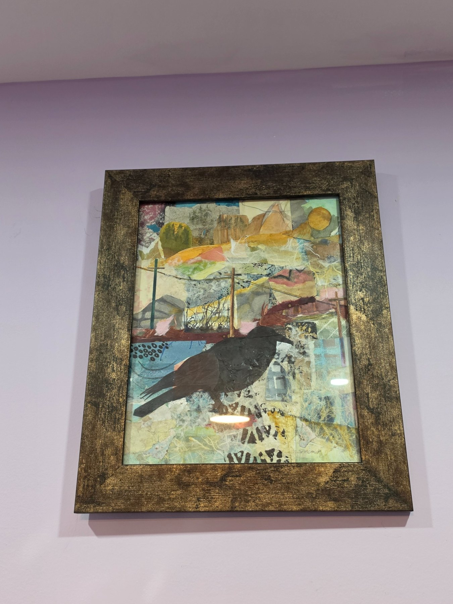
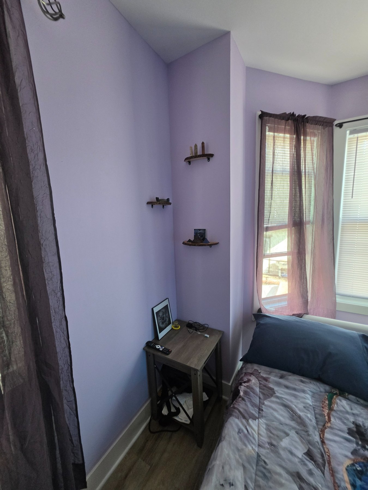
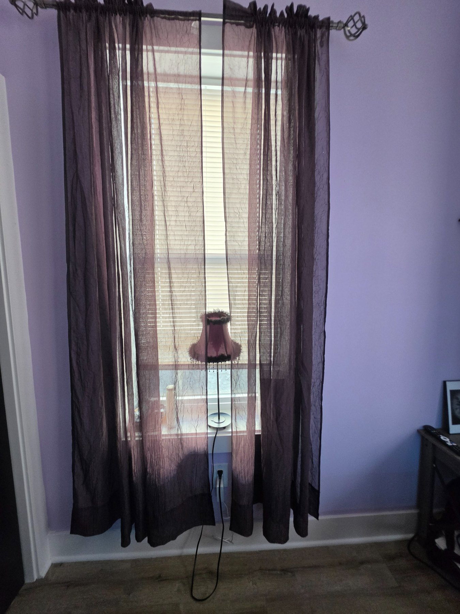
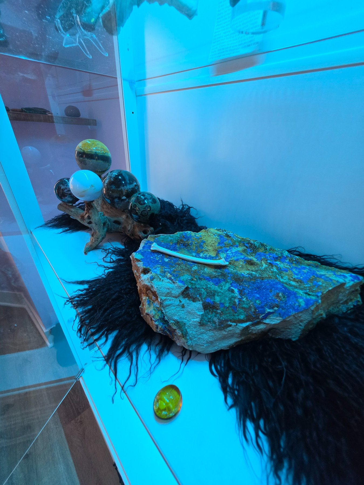

Queen Bed
A private queen-size bed with mineral-inspired bedding.

The Room of Remembrance is home to a collection of crystals, minerals, fossils and natural objects gathered from around the world. The room is conceived as a place to contemplate the immense span of time recorded in the Earth itself, from ancient life preserved in stone to minerals formed through geological processes over millions of years.
At the center of the room is an illuminated collection displaying pieces chosen for their beauty, history and character. Highlights include a Megalodon tooth, a substantial azurite and malachite specimen from Afghanistan, and a large amethyst crystal, alongside fossils, polished stone spheres and other mineral specimens.
The collection continues throughout the room on small individual shelves, allowing the objects to become part of the space rather than simply a display within it. Above the main collection hangs an original mixed-media raven work, adding another layer to the room's meditation on memory, time and what remains.
The room itself is finished in soft violet tones with dark sheer curtains and mineral-inspired bedding. Three windows provide natural light during the day, while the illuminated collection transforms the character of the room at night.
A private queen-size bed with mineral-inspired bedding.
Fully online streaming television in the room.
Individual room access code reset between guests.
Dedicated storage space for clothing and personal items.
Shared with guests staying in the Mask Room.
Access to the common kitchen and shared areas of the house.






Swipe on mobile, use the arrows, or press the left and right arrow keys. Click any photo for fullscreen.